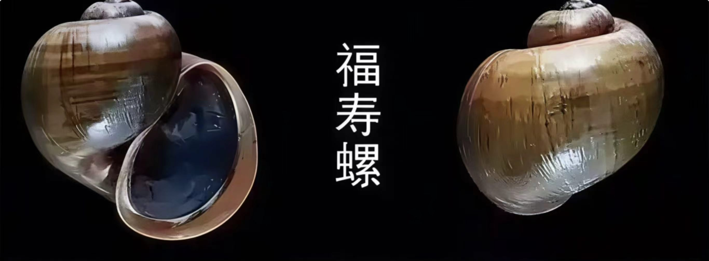
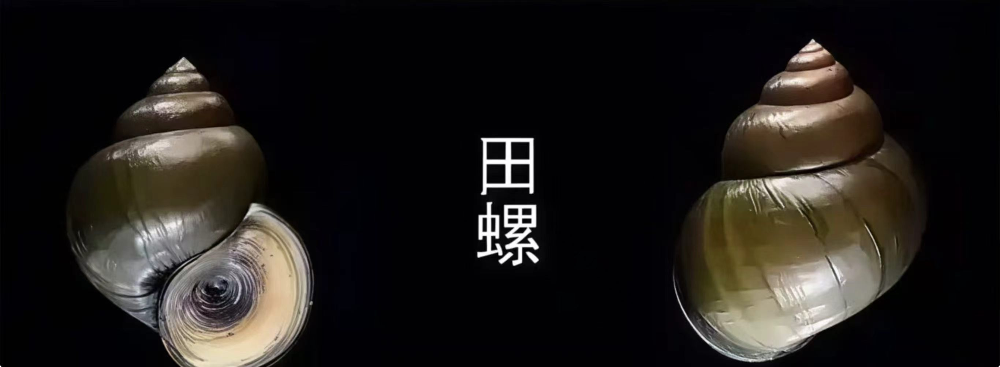

If you see pink egg masses by the lake
那不是新奇植物。那是福寿螺的卵。
That's not a novel plant. Those are Apple Snail eggs.
Distinguish Apple Snails from Mud Snails in 10s


一色二尾三卵四口：看壳色、看尾部、看卵块颜色、看螺口有没有黑边。
Rule of Thumb: Check shell color, tail shape, egg mass color, and the opening edge.
5 Questions: Can you recognize them?
Known Sightings on Sanshan Island
What to do next when you see one
不要徒手剥卵、不要扔进水里。卵块需脱水或压碎销毁，扔进水里反而会孵化。
Do not scrape by hand or throw into water. Egg masses must be desiccated or crushed; throwing them in water helps them hatch.
拍照记录位置。拍下卵块和田螺/福寿螺本身，记下大概地点。
Take a photo and record the location. Capture the egg mass and the snail, note the approximate spot.
联系三山岛景区管理处或当地村委会。附上照片和位置。
Contact Sanshan Island management or the local village committee. Attach photos and location.
三山岛位于苏州市吴中区东山镇东南太湖中，属苏州市福寿螺重点监测区域。
Sanshan Island is located in Taihu Lake (Suzhou), a key monitoring area for Apple Snails.